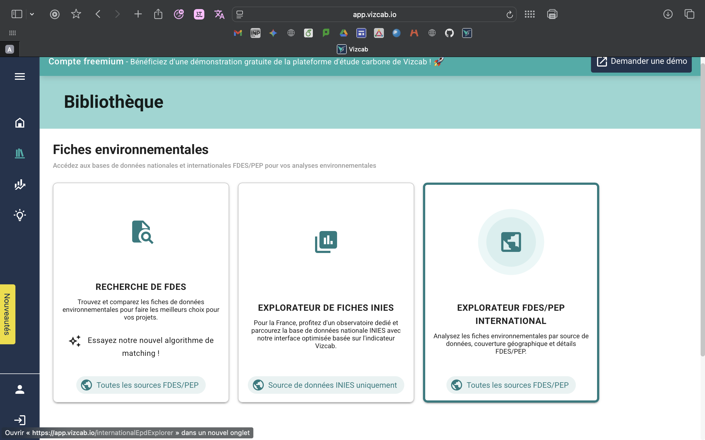
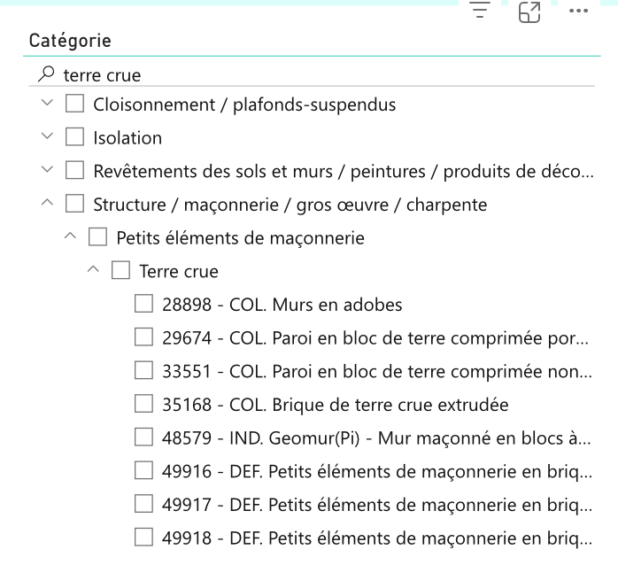
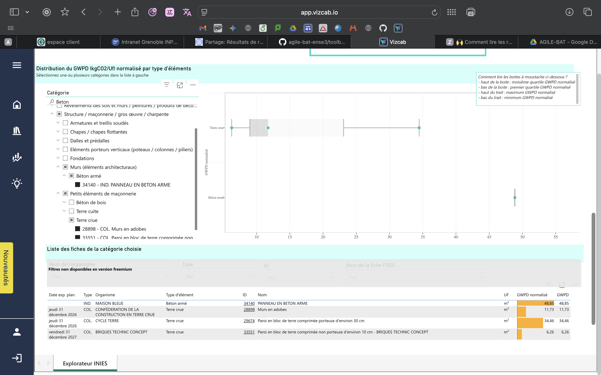

Quel premier ordre de grandeur d'impact carbone pour mes choix constructifs majeurs ?
Tu as ton terrain, ton programme, une intention volumétrique, et tu envisages quelques matériaux principaux (béton, terre crue, bois, brique…). Tu cherches à savoir, sans encore avoir fait une ACV complète, quel ordre de grandeur d'impact carbone tu peux espérer selon tes grands choix constructifs.
Pourquoi cette question compte
L'impact carbone d'un bâtiment se décompose en deux grandes parts : l'Ic_construction (matériaux et mise en œuvre) et l'Ic_énergie (énergie consommée sur 50 ans d'usage). Les choix faits en esquisse — système constructif principal, type d'enveloppe, niveau d'isolation — verrouillent une grande partie de l'Ic_construction et conditionnent indirectement l'Ic_énergie.
Aller chercher un ordre de grandeur dès l'esquisse, c'est éviter de découvrir trop tard qu'un choix structurel verrouille un mauvais score carbone. C'est aussi l'occasion d'apprendre à raisonner avec les FDES (Fiches de Déclaration Environnementale et Sanitaire) de la base INIES, qui sont la référence française pour l'ACV bâtiment.
À ce stade, on ne cherche pas la précision réglementaire : on cherche le bon ordre de grandeur pour orienter les décisions.
Outil recommandé
Vizcab Campus
Vizcab Campus est la version gratuite et accessible en autonomie de la plateforme française Vizcab. Elle donne accès à un explorateur de la base INIES (FDES nationales) et à un explorateur FDES/PEP international, avec une visualisation par boîtes à moustache qui permet de comparer rapidement la dispersion des valeurs au sein d'une catégorie de matériaux.
C'est l'outil le plus adapté en autonomie pour un étudiant qui découvre l'ACV bâtiment et veut comparer rapidement plusieurs matériaux candidats. Pour les étudiants accompagnés par un enseignant formé, Vizcab propose également une offre académique gratuite plus complète (voir la fiche outil Vizcab pour les conditions).
Voir la fiche outil complète →Faire le test toi-même sur Vizcab Campus
Étape 1 — Accéder à la bibliothèque environnementale

Vizcab Campus propose trois portes d'entrée. Pour des matériaux français standards, choisis « Explorateur de fiches INIES ». Pour comparer la dispersion des valeurs ou élargir à l'international, l'« Explorateur FDES/PEP International » donne plus de souplesse.
Étape 2 — Naviguer dans les catégories

Tape ton matériau dans la recherche (ex. « terre crue »). L'arborescence montre les catégories où il apparaît. Pour un mur porteur, descends dans Structure → Petits éléments de maçonnerie → Terre crue. Tu y trouves les FDES disponibles : adobe, BTC porteuse, BTC non porteuse, brique extrudée.
Étape 3 — Comparer plusieurs matériaux

Coche plusieurs FDES pour voir leurs impacts côte à côte. Le point central de chaque boîte est la valeur médiane, la barre verticale montre la dispersion entre les fiches d'une même catégorie. Le tableau en bas donne la valeur GWPD normalisé exacte en kgCO2eq/m² — c'est l'impact carbone dynamique sur 50 ans selon la méthode RE2020.
Notre test sur PhITEM : ce qu'on a appris
On a fait l'exercice sur la maison en terre PhITEM (Saint-Martin-d'Hères), un bureau de 52 m² en BTC stabilisée ciment 7 %, et on l'a comparée à un mur béton armé équivalent. Les valeurs récupérées sur Vizcab Campus :
| Matériau | FDES | GWPD (kgCO2eq/m²) |
|---|---|---|
| Panneau béton armé (référence) | 34140 — IND. MAISON BLEUE | 48,85 |
| BTC porteuse ~30 cm (PhITEM) | 29674 — COL. CYCLE TERRE | 34,46 |
| Murs en adobe (sans liant) | 28898 — COL. Conf. construction terre crue | 11,73 |
| BTC non porteuse ~10 cm | 33551 — COL. BRIQUES TECHNIC CONCEPT | 6,26 |
Trois enseignements qu'on n'imaginait pas avant le test :
- La BTC porteuse de PhITEM (34,46) est environ 30 % moins carbonée qu'un mur équivalent en béton armé (48,85). Un gain réel, mais beaucoup moins spectaculaire que ce qu'on imagine en entendant « construction en terre ».
- À fonction structurelle équivalente, la stabilisation au ciment coûte cher. Un mur BTC porteur (34,46) émet 5,5 fois plus qu'un mur BTC non porteur (6,26), uniquement à cause du ciment nécessaire pour porter la charge. Le matériau « terre » seul est presque neutre ; c'est le liant qui fait grimper le score.
- Le bénéfice carbone matériau peut être annulé par l'usage. Sur les 77 m² de façade de PhITEM, le choix BTC vs béton armé économise environ 1 080 kgCO2eq. Mais une année de chauffage électrique de PhITEM (186 kWh/m²·an × 52 m² × ~0,1 kgCO2eq/kWh) émet environ 970 kgCO2eq. Autrement dit, le gain sur les matériaux est rattrapé en un peu plus d'un an d'usage si la performance énergétique est mauvaise. C'est l'illustration de la tension Ic_construction ↔ Ic_énergie au cœur de la RE2020.
Comment lire le résultat
Le GWPD (Global Warming Potential Dynamic) est exprimé en kgCO2eq par unité fonctionnelle (le m² de paroi finie dans la plupart des FDES murs), sur la durée de vie de référence (souvent 50 ans). Il intègre la fabrication, le transport, la mise en œuvre, l'entretien et la fin de vie.
L'unité fonctionnelle (UF) est l'info à toujours vérifier sur une FDES — sans elle, deux chiffres sont incomparables.
Trois types de FDES coexistent : individuelles (IND) publiées par un fabricant, collectives (COL) représentant un syndicat ou un groupe de fabricants, par défaut (DEF/DED) très pénalisantes utilisées quand aucune FDES spécifique n'existe.
Limites de cette approche
- Vizcab Campus est volontairement très limité : pas de modélisation de bâtiment complet, pas de calcul Ic_construction réglementaire. C'est un outil de découverte et de comparaison de matériaux, pas de production d'études.
- La BTC stabilisée ciment de PhITEM n'a pas de FDES dédiée : la 29674 (CYCLE TERRE) est l'approximation la plus proche, mais ne reflète pas exactement la formulation 7 % ciment de PhITEM. Pour des matériaux atypiques (terre crue de chantier, paille, matériaux locaux), la couverture INIES reste lacunaire.
- Les comparaisons d'épaisseur doivent être faites avec prudence. Le 33551 « non porteur 10 cm » n'est pas comparable au 29674 « porteur 30 cm » à fonction égale.
- Le calcul dynamique (GWPD) pondère moins fortement les émissions futures que la méthode statique (GWP). Pour comparer avec des données internationales, c'est souvent le GWP statique qui est utilisé.
- Une vraie ACV en phase APS/APD demande un outil professionnel (Vizcab Eval, One Click LCA) et une modélisation complète du bâtiment.
Alternatives
- Add-In Excel Vizcab (gratuit) — permet d'associer des FDES à un quantitatif directement dans un tableur. Plus concret pour produire un premier ordre de grandeur sur un projet.
- Base INIES directement — l'accès brut aux FDES sans interface Vizcab. Plus austère mais complet.
- Vizcab — offre académique (gratuite sur demande via un responsable pédagogique de l'école) — donne accès à l'outil complet pendant une période donnée pour un TD encadré.
Pour aller plus loin
- INIES — Le programme français des FDES →
- ADEME — Guide pratique de l'ACV bâtiment
- Méthode RE2020 — Documentation officielle DHUP/CSTB
- Cycle Terre — Documentation technique BTC (éditeur de la FDES 29674)
- Webinaires Vizcab →